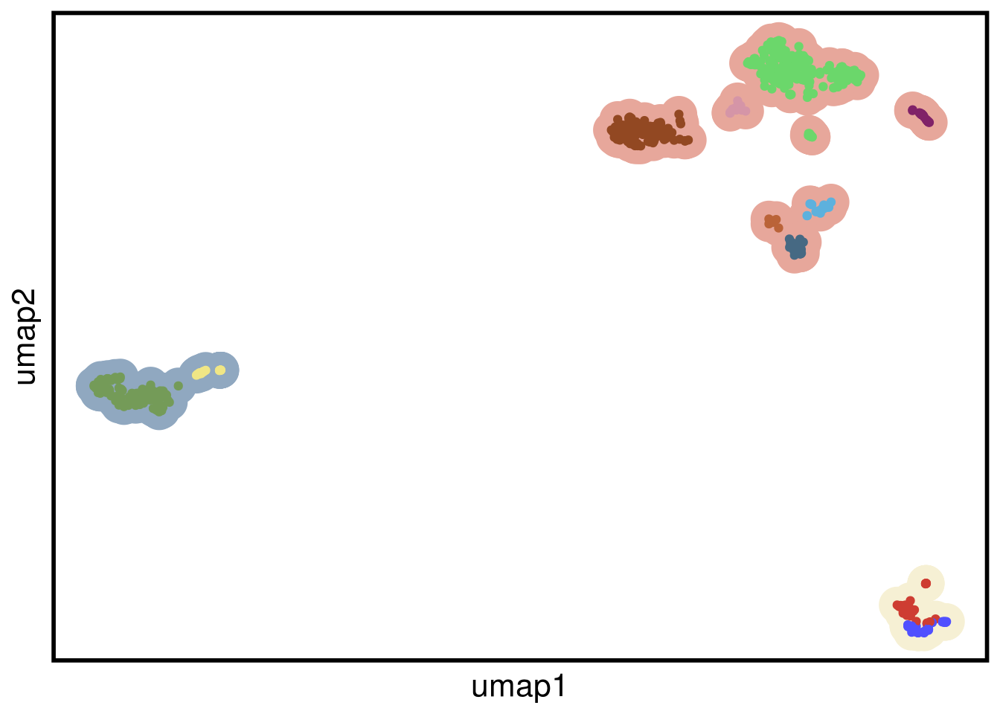
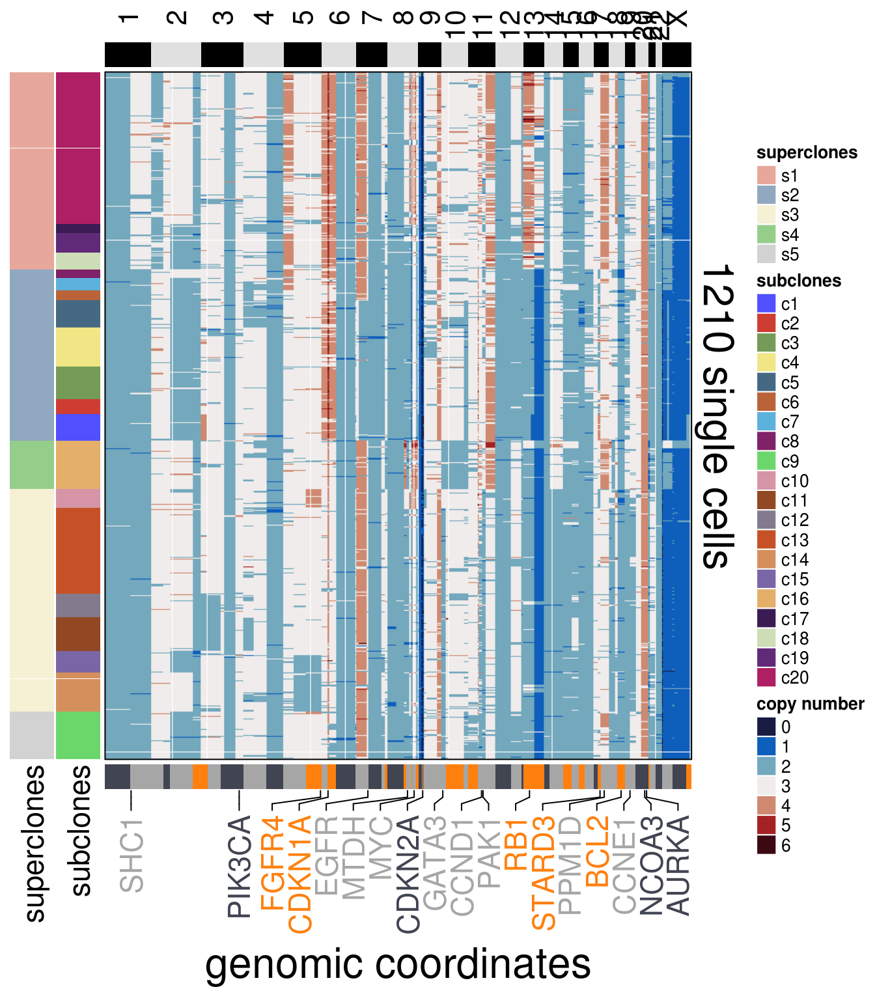

7 Cell lines
source("R/setup.R")
source("R/run_umap.R")
source("R/run_clustering.R")
source("R/order_dataset.R")
source("R/plot_umap.R")
source("R/calculate_consensus.R")
source("R/consensus_genomic_classes.R")
source("R/run_me_tree.R")
source("R/plot_heatmap.R")
source("R/plot_consensus_heatmap.R")# ~~~~~~~~~~~~~~~~~~~~~~~~~~~~~~~~~~~ Thu Mar 4 14:23:11 2021
# ggplot theme setup
# ~~~~~~~~~~~~~~~~~~~~~~~~~~~~~~~~~~~ Thu Mar 4 14:23:17 2021
my_theme <- list(
ggplot2::theme(
axis.title.x = element_text(colour = "black", size = 16),
axis.text.x = element_text(size = 14),
axis.title.y = element_text(colour = "black", size = 16),
axis.text.y = element_text(size = 14),
legend.position = "top",
legend.title = element_blank(),
legend.text = element_text(size = 14)
)
)7.1 MDA-MB-231
# ~~~~~~~~~~~~~~~~~~~~~~~~~~~~~~~~~~~ Thu Mar 4 10:00:10 2021
# MDA-MB-231
# ~~~~~~~~~~~~~~~~~~~~~~~~~~~~~~~~~~~ Thu Mar 4 10:00:26 2021
mb231_ploidy <- 2.41
mb231_popseg_long_ml <- readRDS(here("extdata/merge_levels/mdamb231_popp31_popseg_long_ml.rds"))
mb231_umap <- run_umap(mb231_popseg_long_ml,
umap_n_neighbors = 25,
seed = 206)## Constructing UMAP embedding.## Building SNN graph.## Running hdbscan.## cluster n percent
## c1 54 0.06585366
## c10 15 0.01829268
## c11 140 0.17073171
## c2 54 0.06585366
## c3 164 0.20000000
## c4 25 0.03048780
## c5 41 0.05000000
## c6 19 0.02317073
## c7 33 0.04024390
## c8 30 0.03658537
## c9 245 0.29878049## Done.mb231_ordered <- order_dataset(popseg_long = mb231_popseg_long_ml,
clustering = mb231_clustering)
plot_umap(umap_df = mb231_umap,
clustering = mb231_clustering)## Joining, by = "cells"
mb231_consensus <- calculate_consensus(df = mb231_ordered$dataset_ordered,
clusters = mb231_ordered$clustering_ordered$subclones)
mb231_gen_classes <- consensus_genomic_classes(mb231_consensus,
ploidy_VAL = mb231_ploidy)
mb231_me_consensus_tree <- run_me_tree(consensus_df = mb231_consensus,
clusters = mb231_clustering,
ploidy_VAL = mb231_ploidy)mb231_annotation_genes <-
c(
"SHC1",
"PIK3CA",
"FGFR4",
"CDKN1A",
"EGFR",
"MYC",
"CDKN2A",
"GATA3",
"PGR",
"BCL2",
"AURKA",
"AKT3",
"BCAS2",
"FGFR3",
"LIFR",
"MET",
"PDGFRA",
"VEGFC"
)plot_heatmap(df = mb231_ordered$dataset_ordered,
ploidy_VAL = mb231_ploidy,
ploidy_trunc = 2*(round(mb231_ploidy))+2,
clusters = mb231_ordered$clustering_ordered,
genomic_classes = mb231_gen_classes,
keep_gene = mb231_annotation_genes,
tree_order = mb231_me_consensus_tree$cs_tree_order,
show_legend = TRUE)## 'select()' returned 1:1 mapping between keys and columns## Warning: The input is a data frame, convert it to the matrix.7.2 MDA-MB-231-EX1
# ~~~~~~~~~~~~~~~~~~~~~~~~~~~~~~~~~~~ Thu Mar 4 10:00:10 2021
# MDA-MB-231-EX1
# ~~~~~~~~~~~~~~~~~~~~~~~~~~~~~~~~~~~ Thu Mar 4 10:00:26 2021
mb231ex1_ploidy <- 2.41
mb231ex1_popseg_long_ml <- readRDS(here("extdata/merge_levels/mdamb231ex1_popseg_long_ml.rds"))
mb231ex1_umap <- run_umap(mb231ex1_popseg_long_ml,
umap_n_neighbors = 25,
seed = 206)## Constructing UMAP embedding.## Building SNN graph.## Running hdbscan.## cluster n percent
## c1 28 0.02814070
## c10 21 0.02110553
## c11 82 0.08241206
## c12 534 0.53668342
## c2 89 0.08944724
## c3 18 0.01809045
## c4 20 0.02010050
## c5 50 0.05025126
## c6 36 0.03618090
## c7 74 0.07437186
## c8 24 0.02412060
## c9 19 0.01909548## Done.mb231ex1_ordered <- order_dataset(popseg_long = mb231ex1_popseg_long_ml,
clustering = mb231ex1_clustering)
plot_umap(umap_df = mb231ex1_umap,
clustering = mb231ex1_clustering)## Joining, by = "cells"mb231ex1_consensus <- calculate_consensus(df = mb231ex1_ordered$dataset_ordered,
clusters = mb231ex1_ordered$clustering_ordered$subclones)
mb231ex1_gen_classes <- consensus_genomic_classes(mb231ex1_consensus,
ploidy_VAL = mb231ex1_ploidy)
mb231ex1_me_consensus_tree <- run_me_tree(consensus_df = mb231ex1_consensus,
clusters = mb231ex1_clustering,
ploidy_VAL = mb231ex1_ploidy,
rotate_nodes = c(16:23))mb231ex1_annotation_genes <-
c(
"SHC1",
"PIK3CA",
"FGFR4",
"EGFR",
"MYC",
"CDKN2A",
"GATA3",
"PTEN",
"CCND1",
"BRCA2",
"RB1",
"STARD3",
"PPM1D",
"BCL2",
"CCNE1",
"NCOA3",
"AURKA")plot_heatmap(df = mb231ex1_ordered$dataset_ordered,
ploidy_VAL = mb231ex1_ploidy,
ploidy_trunc = 2*(round(mb231ex1_ploidy))+2,
clusters = mb231ex1_ordered$clustering_ordered,
genomic_classes = mb231ex1_gen_classes,
keep_gene = mb231ex1_annotation_genes,
tree_order = mb231ex1_me_consensus_tree$cs_tree_order,
show_legend = TRUE)## 'select()' returned 1:1 mapping between keys and columns## Warning: The input is a data frame, convert it to the matrix.7.3 MDA-MB-231-EX2
# ~~~~~~~~~~~~~~~~~~~~~~~~~~~~~~~~~~~ Thu Mar 4 10:00:10 2021
# MDA-MB-231-ex2
# ~~~~~~~~~~~~~~~~~~~~~~~~~~~~~~~~~~~ Thu Mar 4 10:00:26 2021
mb231ex2_ploidy <- 2.41
mb231ex2_popseg_long_ml <- readRDS(here("extdata/merge_levels/mdamb231ex2_popseg_long_ml.rds"))
mb231ex2_umap <- run_umap(mb231ex2_popseg_long_ml,
umap_n_neighbors = 25,
seed = 206)## Constructing UMAP embedding.## Building SNN graph.## Running hdbscan.## cluster n percent
## c1 15 0.01672241
## c2 37 0.04124861
## c3 46 0.05128205
## c4 16 0.01783724
## c5 32 0.03567447
## c6 552 0.61538462
## c7 199 0.22185061## Done.mb231ex2_ordered <- order_dataset(popseg_long = mb231ex2_popseg_long_ml,
clustering = mb231ex2_clustering)
plot_umap(umap_df = mb231ex2_umap,
clustering = mb231ex2_clustering)## Joining, by = "cells"mb231ex2_consensus <- calculate_consensus(df = mb231ex2_ordered$dataset_ordered,
clusters = mb231ex2_ordered$clustering_ordered$subclones)
mb231ex2_gen_classes <- consensus_genomic_classes(mb231ex2_consensus,
ploidy_VAL = mb231ex2_ploidy)
mb231ex2_me_consensus_tree <- run_me_tree(consensus_df = mb231ex2_consensus,
clusters = mb231ex2_clustering,
ploidy_VAL = mb231ex2_ploidy)mb231ex2_annotation_genes <-
c(
"SHC1",
"PIK3CA",
"EGFR",
"MYC",
"CDKN2A",
"GATA3",
"CCND1",
"STARD3",
"RPS6KB1",
"PPM1D",
"BCL2",
"NCOA3",
"AURKA")plot_heatmap(df = mb231ex2_ordered$dataset_ordered,
ploidy_VAL = mb231ex2_ploidy,
ploidy_trunc = 2*(round(mb231ex2_ploidy))+2,
clusters = mb231ex2_ordered$clustering_ordered,
genomic_classes = mb231ex2_gen_classes,
keep_gene = mb231ex2_annotation_genes,
tree_order = mb231ex2_me_consensus_tree$cs_tree_order,
show_legend = TRUE)## 'select()' returned 1:1 mapping between keys and columns## Warning: The input is a data frame, convert it to the matrix.7.4 MDA-MB-453
# ~~~~~~~~~~~~~~~~~~~~~~~~~~~~~~~~~~~ Thu Mar 4 10:00:10 2021
# MDA-MB-453
# ~~~~~~~~~~~~~~~~~~~~~~~~~~~~~~~~~~~ Thu Mar 4 10:00:26 2021
mb453_ploidy <- 4.17
mb453_popseg_long_ml <- readRDS(here("extdata/merge_levels/mb453_popseg_long_ml.rds"))
mb453_umap <- run_umap(mb453_popseg_long_ml,
umap_n_neighbors = 25,
seed = 206)## Constructing UMAP embedding.## Building SNN graph.## Running hdbscan.## cluster n percent
## c1 84 0.06666667
## c10 40 0.03174603
## c11 82 0.06507937
## c12 56 0.04444444
## c13 26 0.02063492
## c14 35 0.02777778
## c15 177 0.14047619
## c16 54 0.04285714
## c17 193 0.15317460
## c18 24 0.01904762
## c19 66 0.05238095
## c2 108 0.08571429
## c20 34 0.02698413
## c3 45 0.03571429
## c4 57 0.04523810
## c5 30 0.02380952
## c6 45 0.03571429
## c7 49 0.03888889
## c8 19 0.01507937
## c9 36 0.02857143## Done.mb453_ordered <- order_dataset(popseg_long = mb453_popseg_long_ml,
clustering = mb453_clustering)
plot_umap(umap_df = mb453_umap,
clustering = mb453_clustering)## Joining, by = "cells"mb453_consensus <- calculate_consensus(df = mb453_ordered$dataset_ordered,
clusters = mb453_ordered$clustering_ordered$subclones)
mb453_gen_classes <- consensus_genomic_classes(mb453_consensus,
ploidy_VAL = mb453_ploidy)
mb453_me_consensus_tree <- run_me_tree(consensus_df = mb453_consensus,
clusters = mb453_clustering,
ploidy_VAL = mb453_ploidy,
rotate_nodes = c(21))mb453_annotation_genes <-
c(
"SHC1",
"PIK3CA",
"FGFR4",
"CDKN1A",
"EGFR",
"MTDH",
"MYC",
"CDKN2A",
"GATA3",
"CCND1",
"PAK1",
"RB1",
"STARD3",
"PPM1D",
"BCL2",
"CCNE1",
"NCOA3",
"AURKA"
)plot_heatmap(df = mb453_ordered$dataset_ordered,
ploidy_VAL = mb453_ploidy,
ploidy_trunc = 2*(round(mb453_ploidy)),
clusters = mb453_ordered$clustering_ordered,
genomic_classes = mb453_gen_classes,
keep_gene = mb453_annotation_genes,
tree_order = mb453_me_consensus_tree$cs_tree_order,
show_legend = TRUE)## 'select()' returned 1:1 mapping between keys and columns## Warning: The input is a data frame, convert it to the matrix.7.5 MDA-MB-157
# ~~~~~~~~~~~~~~~~~~~~~~~~~~~~~~~~~~~ Thu Mar 4 10:00:10 2021
# MDA-MB-157
# ~~~~~~~~~~~~~~~~~~~~~~~~~~~~~~~~~~~ Thu Mar 4 10:00:26 2021
mb157_ploidy <- 2.55
mb157_popseg_long_ml <- readRDS(here("extdata/merge_levels/mb157_popseg_long_ml.rds"))
mb157_umap <- run_umap(mb157_popseg_long_ml,
umap_n_neighbors = 25,
seed = 206)## Constructing UMAP embedding.## Building SNN graph.## Running hdbscan.## cluster n percent
## c1 47 0.03884298
## c10 33 0.02727273
## c11 59 0.04876033
## c12 42 0.03471074
## c13 151 0.12479339
## c14 69 0.05702479
## c15 38 0.03140496
## c16 85 0.07024793
## c17 17 0.01404959
## c18 30 0.02479339
## c19 34 0.02809917
## c2 26 0.02148760
## c20 267 0.22066116
## c3 58 0.04793388
## c4 68 0.05619835
## c5 48 0.03966942
## c6 18 0.01487603
## c7 21 0.01735537
## c8 15 0.01239669
## c9 84 0.06942149## Done.mb157_ordered <- order_dataset(popseg_long = mb157_popseg_long_ml,
clustering = mb157_clustering)
plot_umap(umap_df = mb157_umap,
clustering = mb157_clustering)## Joining, by = "cells"mb157_consensus <- calculate_consensus(df = mb157_ordered$dataset_ordered,
clusters = mb157_ordered$clustering_ordered$subclones)
mb157_gen_classes <- consensus_genomic_classes(mb157_consensus,
ploidy_VAL = mb157_ploidy)
mb157_me_consensus_tree <- run_me_tree(consensus_df = mb157_consensus,
clusters = mb157_clustering,
ploidy_VAL = mb157_ploidy,
rotate_nodes = c(29,30))
mb157_annotation_genes <-
c(
"SHC1",
"PIK3CA",
"FGFR4",
"CDKN1A",
"EGFR",
"MTDH",
"MYC",
"CDKN2A",
"GATA3",
"CCND1",
"PAK1",
"RB1",
"STARD3",
"PPM1D",
"BCL2",
"CCNE1",
"NCOA3",
"AURKA"
)plot_heatmap(df = mb157_ordered$dataset_ordered,
ploidy_VAL = mb157_ploidy,
ploidy_trunc = 2*(round(mb157_ploidy)),
clusters = mb157_ordered$clustering_ordered,
genomic_classes = mb157_gen_classes,
keep_gene = mb157_annotation_genes,
tree_order = mb157_me_consensus_tree$cs_tree_order,
show_legend = TRUE)## 'select()' returned 1:1 mapping between keys and columns## Warning: The input is a data frame, convert it to the matrix.
7.6 BT20
# ~~~~~~~~~~~~~~~~~~~~~~~~~~~~~~~~~~~ Thu Mar 4 10:00:10 2021
# BT20
# ~~~~~~~~~~~~~~~~~~~~~~~~~~~~~~~~~~~ Thu Mar 4 10:00:26 2021
bt20_ploidy <- 2.7
bt20_popseg_long_ml <- readRDS(here("extdata/merge_levels/bt20_popseg_long_ml.rds"))
bt20_umap <- run_umap(bt20_popseg_long_ml,
umap_n_neighbors = 25,
seed = 206)## Constructing UMAP embedding.## Building SNN graph.## Running hdbscan.## cluster n percent
## c1 272 0.22095857
## c10 35 0.02843217
## c11 67 0.05442729
## c12 50 0.04061738
## c13 169 0.13728676
## c2 46 0.03736799
## c3 94 0.07636068
## c4 28 0.02274574
## c5 29 0.02355808
## c6 128 0.10398050
## c7 48 0.03899269
## c8 216 0.17546710
## c9 49 0.03980504## Done.bt20_ordered <- order_dataset(popseg_long = bt20_popseg_long_ml,
clustering = bt20_clustering)
plot_umap(umap_df = bt20_umap,
clustering = bt20_clustering)## Joining, by = "cells"bt20_consensus <- calculate_consensus(df = bt20_ordered$dataset_ordered,
clusters = bt20_ordered$clustering_ordered$subclones)
bt20_gen_classes <- consensus_genomic_classes(bt20_consensus,
ploidy_VAL = bt20_ploidy)
bt20_me_consensus_tree <- run_me_tree(consensus_df = bt20_consensus,
clusters = bt20_clustering,
ploidy_VAL = bt20_ploidy)bt20_annotation_genes <-
c(
"SHC1",
"PIK3CA",
"FGFR4",
"EGFR",
"MYC",
"GATA3",
"PTEN",
"BCL2",
"CCNE1",
"NCOA3",
"AURKA"
)plot_heatmap(df = bt20_ordered$dataset_ordered,
ploidy_VAL = bt20_ploidy,
ploidy_trunc = 2*(round(bt20_ploidy)),
clusters = bt20_ordered$clustering_ordered,
genomic_classes = bt20_gen_classes,
keep_gene = bt20_annotation_genes,
tree_order = bt20_me_consensus_tree$cs_tree_order,
show_legend = TRUE)## 'select()' returned 1:1 mapping between keys and columns## Warning: The input is a data frame, convert it to the matrix.7.7 Clones barplot
n_clones_cl <- tibble(
sample = rep(c("MDA231 P",
"MDA231 EX 1",
"MDA231 EX 2",
"MDA453",
"MDA157",
"BT-20"),2),
n_clones = c(
length(unique(mb231_clustering$superclones)),
length(unique(mb231ex1_clustering$superclones)),
length(unique(mb231ex2_clustering$superclones)),
length(unique(mb453_clustering$superclones)),
length(unique(mb157_clustering$superclones)),
length(unique(bt20_clustering$superclones)),
length(unique(mb231_clustering$subclones)),
length(unique(mb231ex1_clustering$subclones)),
length(unique(mb231ex2_clustering$subclones)),
length(unique(mb453_clustering$subclones)),
length(unique(mb157_clustering$subclones)),
length(unique(bt20_clustering$subclones))
),
group = c(
rep("superclones",6),
rep("subclones", 6)
)
)
p_nclones_cl <- n_clones_cl %>%
ggplot() +
geom_col(
aes(
x = fct_relevel(sample, c("MDA231 P",
"MDA231 EX 1",
"MDA231 EX 2",
"MDA453",
"MDA157",
"BT-20")),
y = n_clones,
fill = fct_relevel(group, c("superclones",
"subclones"))
),
position = "dodge"
) +
theme_classic() +
my_theme +
theme(axis.text.x = element_text(angle = 90, vjust = .5,
hjust = 1)) +
scale_y_continuous(
breaks = scales::pretty_breaks(n = 10),
limits = c(0, 22),
expand = c(0, 0)
) +
paletteer::scale_fill_paletteer_d("yarrr::info") +
xlab("") +
ylab("number of clones")
p_nclones_cl